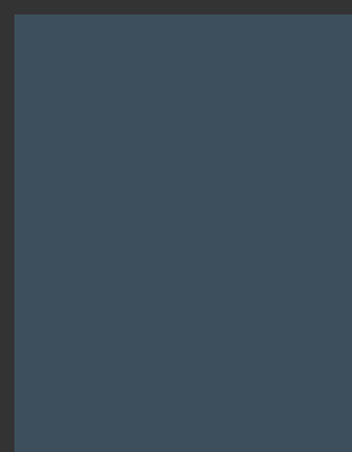
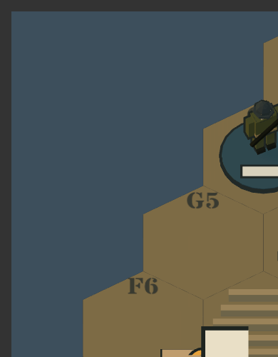

Eval 23 — Three-player triangle
Sections 1, 2 and the sight count in 4 are computed when the page loads, from the real modules through Vite (no game
server): MAPS and mapFor from src/content, createMatch, viewFor and
canSee from src/rules, rotate from src/shared/hex.ts, the real board and low-poly kit.
The chart beside the board is drawn by this page from the same GameMap; the lanes on it are the shortest walks the
page works out. Section 3's screenshots and section 4's match figures were taken by the implementer and are dated.
1. Tripoint, for three (mapFor(3))
2. The camera on a triangle
The camera's limits were made for rectangles: the screen's edge may go a hex beyond the outermost hexes, along each
axis. A triangle fills only half of its bounding box, so zoomed in, a player could drag the camera into an empty corner
of the box and see nothing but slate. The board now also keeps the middle of the screen within a hex of the map
(keepOverMap in src/client/render/index.ts). The stage below is the real board, 390 wide; the
first button zooms in all the way and drags far towards the top-left corner with synthetic pointer and wheel events, as a
finger would.


3. Tripoint framed on the real play screen
Taken 2026-11-19 in headless Chromium (software WebGL, SwiftShader) at three window sizes, from
eval/22-play-frame.html?map=tripoint&umpire=1: the real play
screen on the first plan of a real createMatch on tripoint, seat 0's squad, the fog lifted so the whole drawing
shows. At 1280 × 800 the whole triangle is in frame; on a phone the play screen opens zoomed in, as on the other maps.
No real phone was used.
4. Figures (seeded scripted matches, 2026-11-19)
What to check
- Section 1: press Turn. The chart turns a third of a turn about the hill and lands on itself: every hex on a hex of the same ground and height, every area outlined where an area of the same kind was. Only the letters (and on the board, the squads) have moved round one corner: W's gate J now stands where K was, and so on. The table under it says the same from the data.
- The step table: every row reads same.
- Section 2: after the button, part of the map is on the screen, never only slate.
Not working, or not shown
- Sight is not exactly the same after the turn:
linebreaks a tie (a line along hex edges) with a fixed nudge, so 172 of the 9180 hex pairs see differently from the pair a third of a turn on (section 4).linewas not changed (out of scope). - Seat fairness is measured with the scripted players only (section 4): every seat within two standard errors of the others, and which seat is ahead changes with the squads dealt, but nobody has played the map.
- The lanes, areas and letters are labelled on the page's chart, not on the 3D board (the board has no labels of that kind).
- The board's turn (section 1) builds a turned copy of the map and redraws it: the real board drawing it, not a turn of the camera. The play screen has no such button.
- Nothing here was tried on a real phone or by people playing.